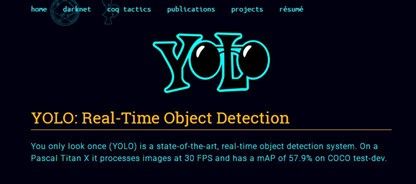
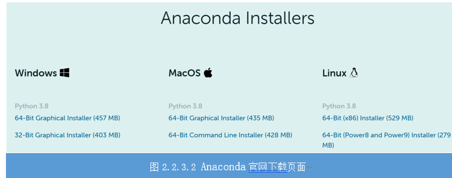
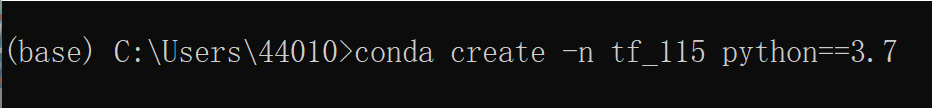
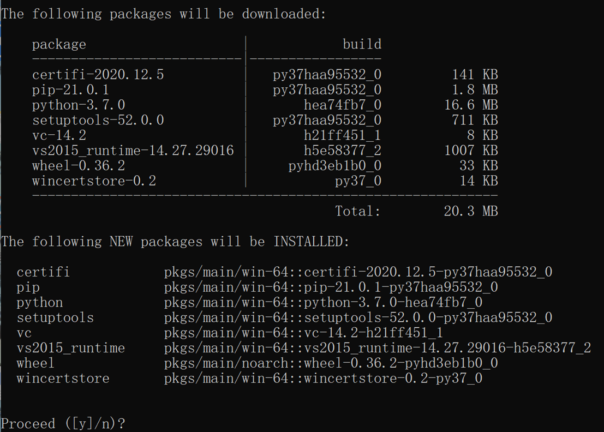
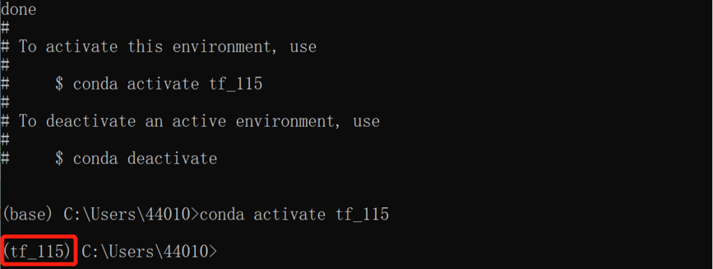
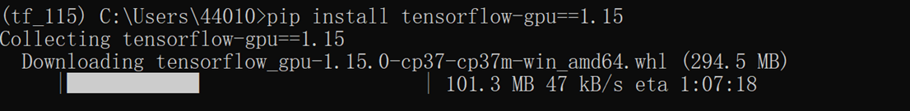
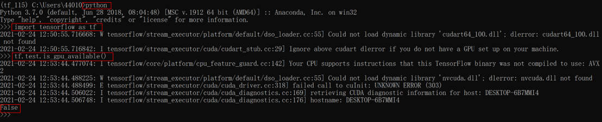
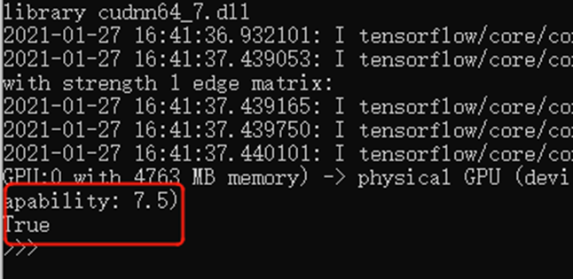
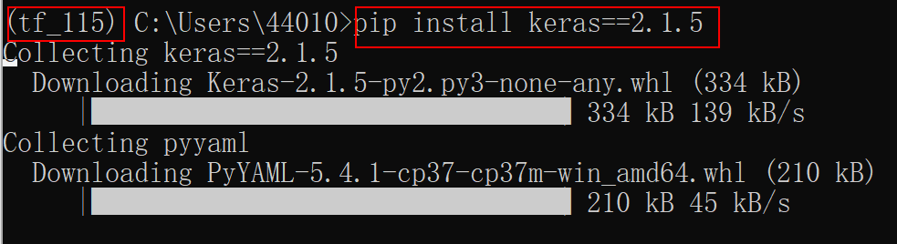

任务2.2.3 搭建YOLO3环境#
任务描述#
任务1、2完成后，我们获得标注好的植物图像数据集，可以用来训练我们的植物检测模型。我们并不需要搭自己的人工神经网络，毕竟有很多成熟的、效果好的框架和案例，本项目将使用YOLO框架（图2.2.3.1），复用keras-yolo3官方案例，改成我们自己的数据集进行训练即可，在此之前，需要搭建好YOLO3运行环境。

图2.2.3.1 YOLO框架
知识链接#
一、植物检测模型训练工具准备#
Anaconda指的是一个开源的Python发行版本，其包含了conda、Python等180多个科学包及其依赖项，比如：numpy、pandas等。conda是一个开源的包、环境管理器，可以用于在同一个机器上安装不同版本的软件包及其依赖，并能够在不同的环境之间切换。因为包含了大量的科学包，Anaconda 的下载文件比较大（约 457 MB），如果只需要某些包，或者需要节省带宽或存储空间，也可以使用Miniconda这个较小的发行版（仅包含conda和 Python）。Anaconda下载网址：https://www.anaconda.com/products/individual，页面如图2.2.3.2所示。根据自己电脑安装的操作系统选择适合版本的安装包进行下载，安装。

PyCharm是由JetBrains打造的一款Python IDE，带有一整套可以帮助用户在使用Python语言开发时提高其效率的工具，比如调试、语法高亮、Project管理、代码跳转、智能提示、自动完成、单元测试、版本控制。此外，该IDE提供了一些高级功能，以用于支持Django框架下的专业Web开发。下载PyCharm网址：https://www.jetbrains.com/pycharm/。
Keras是一个用 Python 编写的高级神经网络 API，它能够以 TensorFlow、CNTK,或者 Theano 作为后端运行，进行深度学习模型的设计、调试、评估、应用和可视化。Keras 的开发重点是支持快速的人工智能深度学习实验，能够以最少的时间把你的想法转换为实验结果。
二、搭建Yolov3虚拟环境#
1.创建虚拟环境#
本项目需要用到官方karas-yolov3的项目，它对python版本以及其他库的版本有严格的对应关系，因此不管你的电脑是否已经有Anaconda或者Pycharm，为了在后续步骤不发生冲突，建议创建一个专门的虚拟环境。
工程思维：利用小代价解决不可预测的问题，从而集中精力决绝核心问题。
**步骤1：**打开Anaconda Prompt，输入 conda create -n tf_115 python==3.7 指令，即创建一个名字为tf_115的虚拟环境，如图2.2.3.3所示。

图2.2.3.3 创建一个名字为tf_115的虚拟环境 接着会提示是否继续？选**“y”**进行继续安装，如图2.2.3.4所示。

图2.2.3.4 选“y”进行继续安装
成功安装后，会显示图2.2.3.5所示的画面，接着输入指令 conda activate tf_115，进入创建好的虚拟环境。

图2.2.3.5 进入创建好的虚拟环境
**步骤2：**安装tensorflow-gpu1.15版本，并测试tensorflow是否成功调用GPU。输入命令 pip install tensorflow-gpu==1.15，如图图2.2.3.6所示。注意：本项目对应的是1.15版本。

图2.2.3.6 安装tensorflow-gpu1.15版本 安装完成后，输入三行命令：
**import tensorflow as tf**
**tf.test.is_gpu_available()**
如果显示False，如图2.2.3.7所示，可能是显卡驱动问题，需要更新驱动。也可能你的电脑是集成显卡，并没有GPU，而是用CPU运行的。这种情况下你需要换一台带GPU的电脑进行本项目的操作。如果你没有设备，只能使用CPU时，把安装命令改为 pip install tensorflow==1.15即可。

图2.2.3.7 显示False画面 如果显示True，如下图所示，说明tensorflow能够成功调用GPU，并显示了本台机器GPU的算力。

图2.2.3.8 显示True画面
**Tips：**研究深度学习和神经网络大都离不开GPU，在GPU的加持下，我们可以更快的获得模型训练的结果。使用GPU和使用CPU的差别在哪里？为什么需要GPU？深度学习和神经网络的每个计算任务都是独立于其他计算的，任何计算都不依赖于任何其他计算的结果，可以采用高度并行的方式进行计算。而GPU相比于CPU拥有更多独立的大吞吐量计算通道，较少的控制单元使其不会受到计算以外的更多任务的干扰，拥有比CPU更纯粹的计算环境，所以深度学习和神经网络模型在GPU的加持下会更高效地完成计算任务。
2.安装本项目需要的其他库#
安装本项目需要的其他库如表2.2.3.1所示。
序号 |
库名称 |
版本 |
|---|---|---|
1 |
opencv(计算机视觉和机器学习软件库) |
不限版本 |
2 |
kears(开源人工神经网络库) |
2.1.5 |
3 |
PIL(图像处理库) |
不限版本 |
4 |
matplotlib(绘图库) |
不限版本 |
5 |
NumPy(开源的数值计算扩展库) |
不限版本 |
打开Anaconda Prompt，注意**要先进入之前创建的tf_115的虚拟环境(即输入命令conda activate tf_115)，**然后分别输入命令：
**pip installkeras==2.1.5**
**pip install pillow**
**pip install matplotlib**
**pip install numpy**
**pip install h5py==2.10**

图2.2.3.8 打开Anaconda Prompt画面
至此，我们已经成功搭建好环境，下一任务将测试官方keras-yolov3实例。
素质素养养成#
1.本项目需要用到官方karas-yolov3的项目，它对python版本以及其他库的版本有严格的对应关系，因此不管你的电脑是否已经有Anaconda或者Pycharm，为了在后续步骤不发生冲突，建议创建一个专门的虚拟环境，这个过程中培养学生工程思维，利用小代价解决不可预测的问题，从而集中精力决绝核心问题。
2.在实践过程中，会遇到很多不可预计的问题，引导学生碰到问题不要慌乱，从提示中寻找答案，在一步步解决问题的过程提升职业能力，养成不折不挠的工作作风。
3.充分利用开源的资源提升学习效率，引导学生正确使用网络资源，养成优质资源共享的互联网思维意识、认识技术无国界。
任务实施#
任务工作单1：YOLO3环境认知#
组号：__________ 姓名：__________ 学号：__________ 检索号：__________
引导问题：
（1）请通过资料搜索，查找本项目（yolo3官方示例）所需要装的主要库是那些？分别有什么作用？
任务工作单2：确定搭建yolo3环境的流程（讨论）#
组号：__________ 姓名：__________ 学号：__________ 检索号：__________
引导问题：
（1）小组交流讨论，教师参与，确定搭建yolo3环境的流程。
—————————————————————————————————————————————————————————
任务工作单3：搭建虚拟环境#
组号：__________ 姓名：__________ 学号：__________ 检索号：__________
引导问题：
（1）搭建yolo3官方案例的虚拟环境。
—————————————————————————————————————————————————————————
（2）分析实训室电脑及个人电脑在搭建虚拟环境中的区别。
—————————————————————————————————————————————————————————
（3）总结在搭建虚拟环境中碰到的问题及解决方案。
—————————————————————————————————————————————————————————